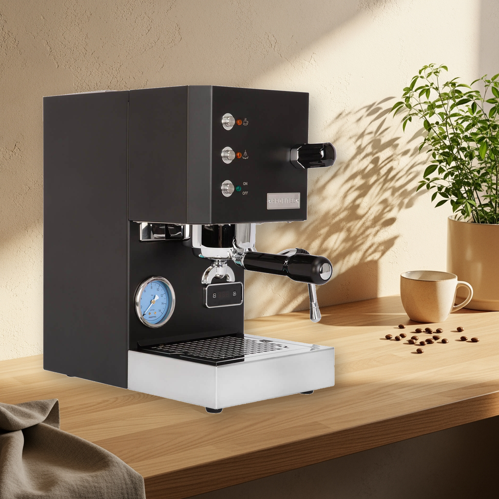

Ein Messingkessel-Einkreiser mit gradgenauem PID, 58-mm-Profi-Siebträger und Made-in-Germany-Verarbeitung – auf nur 21 cm Stellbreite. Ein ehrlicher Blick auf den Mittelklasse-Testsieger: was er kann, wo die Einkreiser-Grenzen liegen und was erst nach Wochen auffällt.

Schon beim Auspacken wird klar, warum die GO eine andere Liga ist als die Thermoblock-Konkurrenz: gebürsteter Edelstahl, ein Siebträger, der satte 58-mm-Profi-Maße hat, und ein Gewicht, das die massive Bauweise sofort verrät. Mit nur 21 cm Stellbreite passt sie trotzdem in Küchen, in denen eine E61-Maschine keine Chance hätte. Wichtig für die Budgetplanung: Eine Mühle ist nicht an Bord und auch nicht integriert – ohne separate Espressomühle (ab ca. 150 €, siehe Mühlen-Test) bleibt die GO unter ihren Möglichkeiten.
Die Verarbeitung „Made in Germany" (Profitec gehört zur ECM-Gruppe) zeigt sich in Details: sauber entgratete Bleche, hochwertige Ventile, ein von außen zugängliches Expansionsventil (OPV). Nach sechs Monaten Alltagsbetrieb berichten Nutzer von exakt null Verschleißerscheinungen – diese Maschine ist erkennbar auf Jahrzehnte gebaut, Ersatzteile sind dank E61-kompatiblem Standard und deutscher Fertigung dauerhaft verfügbar.
Herzstück ist der isolierte 300-ml-Messingkessel mit gradgenauem PID – eine Seltenheit in dieser Preisklasse, in der sonst Thermoblocks dominieren. Das Ergebnis ist messbar: Im Kaffeemacher-Test hielt die GO die Brühtemperatur im WBC-Protokoll erstaunlich konstant, von Bezug zu Bezug und innerhalb des einzelnen Bezugs. In der Praxis heißt das: Wenn ein Bezug sitzt, sitzt auch der nächste – Fehlersuche findet an Mahlgrad und Dosis statt, nie an der Maschine.
Dank cleverem Fast-Heat-Protokoll ist die GO in rund 7,5 Minuten betriebsbereit – für einen Messingkessel-Einkreiser ein Spitzenwert (klassische E61-Maschinen brauchen 15–25 Minuten). Der serienmäßige Shot-Timer im Display ersetzt die Stoppuhr, die programmierbare Vorbrühung und das extern einstellbare OPV geben Tüftlern Spielraum, den es sonst erst in der Premium-Klasse gibt.
Die Dampflanze liefert genug Druck für feinporigen Mikroschaum – Latte Art ist nach etwas Übung gut machbar. Die systembedingte Grenze des Einkreisers: Espresso und Milchschaum entstehen nacheinander, mit rund 40–50 Sekunden Umschaltzeit zwischen Bezug und Dampfphase. Für ein bis zwei Cappuccini am Morgen völlig unkritisch; wer regelmäßig vier Milchgetränke in Serie zubereitet, sollte in die Dualboiler-Klasse schauen (Premium-Vergleich).
Die GO verzichtet auf LCD-Menüführung und Automatikprogramme – bedient wird mit Hebel, Drehknopf und PID-Display. Genau das schätzen Nutzer nach der Eingewöhnung: nichts lenkt ab, alles ist reparierbar. Kompromisse der kompakten Bauform: Die Abtropfschale ist klein und will täglich geleert werden, und unter den Auslauf passen nur Tassen bis ca. 8 cm Höhe – Latte-Macchiato-Gläser müssen auf der Abtropfschale balancieren oder es wird direkt umgefüllt.
Tägliches Ausklopfen und Spülen ist Routine, dazu wöchentliches Rückspülen mit dem Blindsieb (liegt bei). Anders als bei E61-Maschinen entfällt das Schmieren der Nocken – die Ringbrühgruppe ist praktisch wartungsfrei. Der wichtigste Langlebigkeitsfaktor ist die Wasserhärte: mit Filter oder geeignetem Flaschenwasser arbeiten, dann bleibt der Messingkessel über Jahre sauber. Realistischer Pflegeaufwand: 5–10 Minuten pro Woche.
Kaufen, wenn du maximale Espressoqualität und eine Maschine fürs Leben suchst, bereits eine Mühle hast (oder einplanst) und wenig Stellfläche opfern willst. Nicht kaufen, wenn du ein Komplettpaket ohne Zweitgerät willst (→ Sage Barista Pro oder Quick Mill Pegaso PID im Mittelklasse-Vergleich) oder Milchgetränke im Serienbetrieb brauchst (→ Dualboiler-Klasse).
| Technische Daten | Profitec GO |
|---|---|
| Heizsystem | Einkreiser, isolierter 300-ml-Messingkessel, PID gradgenau |
| Extras | Shot-Timer, programmierbare Vorbrühung, extern einstellbares OPV, ECO-Modus |
| Siebträger | 58 mm (Profi-Standard, E61-kompatibel) |
| Milchschaum | manuelle Profi-Dampflanze |
| Wassertank | 2,8 Liter |
| Maße (B×T×H) | ca. 21 × 36 × 38 cm |
| Preis ca.* | ab 999 € (Stand 29.07.2026) |
Kein anderes Gerät unter 1.000 € kombiniert Messingkessel, gradgenauen PID und 58-mm-Standard in dieser Verarbeitungsqualität. Die GO ist kein Komplettpaket und will eine gute Mühle an ihrer Seite – dann aber liefert sie Espresso, der in der Mittelklasse seinesgleichen sucht. Verdienter Mittelklasse-Testsieger.
Aktuellen Preis bei roastmarket prüfen*